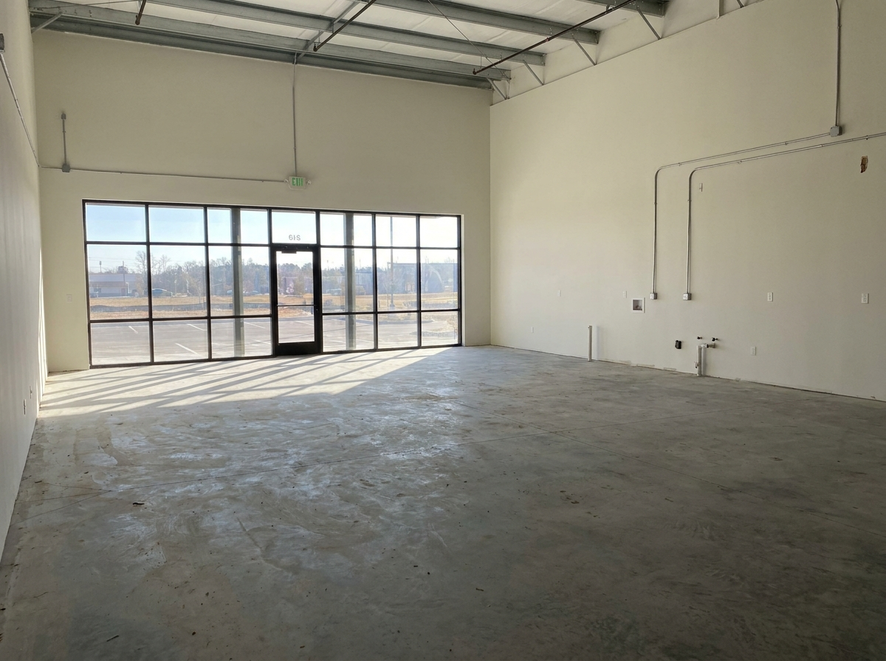
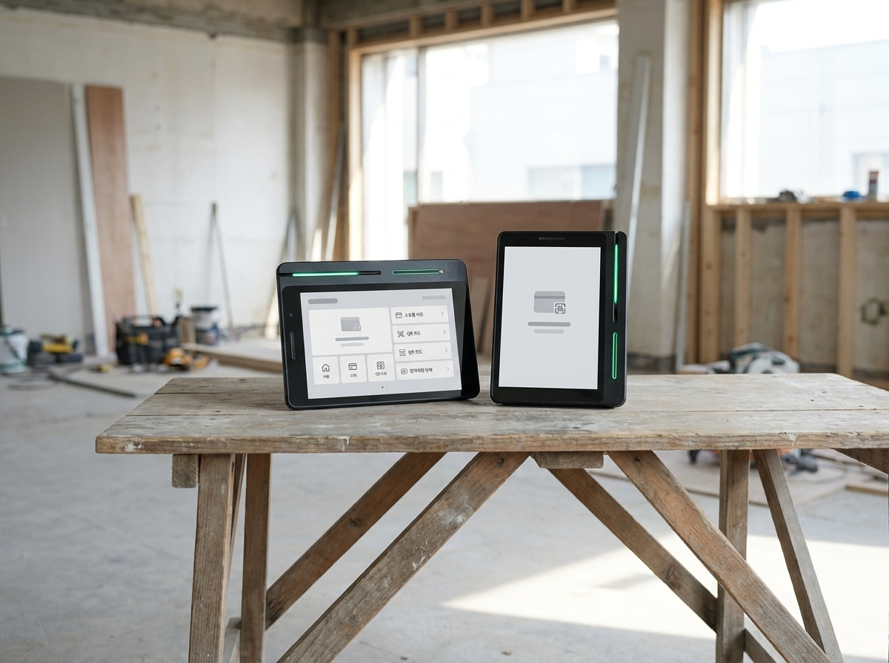
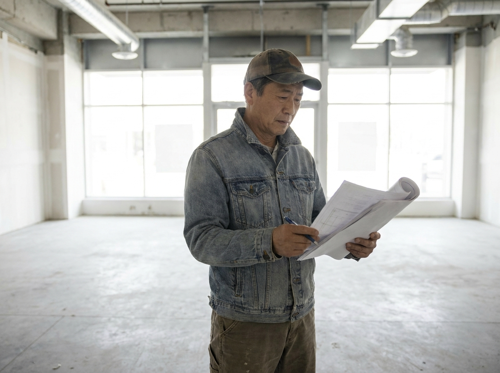

상가 임대차 계약 전, 사장님이 반드시 확인할 6가지 체크리스트
결론부터 말씀드리면, 첫 점포 계약에서 가장 중요한 순간은 결제기 고르기도 인테리어도 아닌 "자리 고르기"입니다. 권리금·관리비·계약기간·원상복구·업종 제한·전대(재임대) 가능 여부, 이 여섯 가지를 계약서 도장을 찍기 전에 반드시 확인하셔야 합니다. 저희 누리네트웍스는 14년간 수도권 3만여 매장의 오픈을 곁에서 지켜보며, 계약 단계에서 놓친 조항 하나가 개업 후 수백만 원의 부담으로 돌아오는 경우를 수없이 봐왔습니다. 그래서 오늘은 매장을 여는 사장님이 가장 먼저 챙기셔야 할 실전 체크리스트를 정리했습니다. 다만 법률 판단이 필요한 부분은 반드시 법제처·대한법률구조공단·부동산 전문가의 확인을 함께 받으시길 당부드립니다.

계약서 도장 전, 무엇부터 봐야 할까요
점포 계약은 인테리어나 결제 시스템보다 훨씬 앞선 단계입니다. 자리를 잘못 고르면 아무리 좋은 장비를 들여도 되돌리기 어렵기 때문입니다. 가장 먼저 확인할 것은 권리금의 실체입니다. 권리금은 법으로 정해진 금액이 아니라 기존 임차인과 주고받는 관행적 대가이므로, 시설 권리금·영업 권리금·바닥 권리금 중 무엇에 해당하는지, 그 근거가 합리적인지 따져보셔야 합니다.
다음은 관리비입니다. 임대료만 보고 계약했다가 관리비·공용전기·냉난방비가 별도로 크게 붙어 실제 고정비가 예상을 훌쩍 넘는 경우가 많습니다. 관리비 산정 기준과 포함 항목을 서면으로 확인하세요. 특히 공실이 많은 건물은 공용부 관리비 부담이 입주 매장에 더 실릴 수 있으니, 최근 몇 개월치 관리비 명세를 요청해 실제 청구 내역을 눈으로 확인하시는 것이 안전합니다.
계약기간과 갱신 역시 핵심입니다. 흔히 언급되는 계약갱신요구권이나 상가건물임대차보호법의 보호 범위는 환산보증금 기준 등에 따라 달라질 수 있어, 개별 상황은 반드시 대한법률구조공단이나 부동산 전문가를 통해 확인하시는 것이 안전합니다. 여기서 단정적으로 "반드시 보호된다"고 말씀드릴 수 없는 이유입니다. 계약서에 임대료 인상 상한이나 갱신 조건이 어떻게 적혀 있는지도 서명 전에 꼼꼼히 읽어보세요.
한눈에 보는 계약 전 확인 항목
아래 표는 첫 점포 계약에서 자주 놓치는 항목을 개념 위주로 정리한 것입니다.
| 확인 항목 | 무엇을 보나 | 놓치면 생기는 일 | 참고 |
|---|---|---|---|
| 권리금 | 종류·근거·회수 조건 | 과도한 지급, 회수 분쟁 | 부동산 전문가 상담 |
| 관리비 | 산정 기준·포함 항목 | 고정비 초과 부담 | 서면 명시 요청 |
| 계약기간·갱신 | 기간·갱신 조건 | 조기 퇴거 위험 | 대한법률구조공단 확인 |
| 원상복구 | 복구 범위·기준 시점 | 퇴거 시 과다 비용 | 특약으로 범위 한정 |
| 업종 제한 | 허용 업종·경업 금지 | 영업 자체가 불가 | 건축물대장·관리규약 |
| 전대(재임대) | 전대 허용 여부 | 무단 전대 시 해지 | 임대인 서면 동의 |
위 표는 이해를 돕기 위한 개념 정리이며, 실제 계약과 법률 적용은 사안마다 다릅니다. 정확한 내용은 법제처 생활법령정보·대한법률구조공단 등 공식기관과 부동산 전문가의 확인을 받으시기 바랍니다.

원상복구·업종 제한·전대, 이 세 가지를 조심하세요
계약 종료 시점에 가장 많이 다투는 부분이 원상복구입니다. "처음 상태로 되돌린다"는 문구가 어느 시점을 기준으로 하는지 애매하면, 이전 임차인이 설치한 것까지 사장님이 철거 비용을 떠안을 수 있습니다. 복구 범위와 기준 시점을 특약으로 명확히 한정하고, 계약 시작일에 매장 상태를 사진으로 남겨두시는 것이 나중의 분쟁을 줄이는 가장 확실한 방법입니다.
업종 제한도 반드시 확인하세요. 건물 관리규약이나 임대차 계약서에 특정 업종을 금지하거나, 같은 건물 내 동종 영업을 제한하는 조항이 있을 수 있습니다. 음식점의 경우 정화조 용량·배기 설비 등 물리적 제약으로 아예 영업 허가가 나지 않는 자리도 있으니, 계약 전 건축물대장과 관할 구청 확인이 필수입니다. 카페·주점처럼 영업 허가 요건이 까다로운 업종이라면 계약 전에 관할 기관에 미리 문의해 두는 편이 안전합니다.
전대(재임대)는 임대인의 서면 동의 없이 진행하면 계약 해지 사유가 될 수 있습니다. 나중에 사업을 양도하거나 일부 공간을 나눠 쓸 계획이 있다면, 전대 가능 여부를 계약 시점에 미리 협의해두는 것이 현명합니다. 이 모든 판단은 개별 사정에 따라 결과가 달라지므로, 애매한 조항은 넘기지 마시고 전문가와 상의하시길 권합니다.
자리를 정하셨다면, 오픈 준비는 저희가 함께합니다
계약이라는 큰 산을 넘으셨다면, 그다음은 매장을 실제로 굴러가게 만드는 일입니다. 누리네트웍스는 서울·인천·경기 수도권을 직접 방문 설치하는 POS·결제단말 대리점으로, 14년간 3만여 매장과 함께해왔습니다. 송도·동탄·판교처럼 새로 상권이 형성되는 지역의 신규 오픈 매장부터 오래된 골목 상권의 재단장까지, 200곳이 넘는 레퍼런스와 안정적인 운영으로 사장님의 개업을 뒷받침합니다.
포스·카드단말기·키오스크·테이블오더 구성은 매장 업종과 동선에 맞춰 상담 시 안내해드리며, 대리점 마진을 뺀 직접 공급가로 정직하게 제안드립니다. 특히 토스단말기와 네이버단말기는 월 0원·약정 없음으로 초기 부담 없이 시작하실 수 있어, 개업 자금이 빠듯한 첫 창업 사장님께 부담이 적습니다. 자리 계약을 마치고 인테리어를 시작하실 즈음, 결제·포스 구성도 가볍게 함께 챙기시면 오픈 일정이 한결 매끄러워집니다.

자주 묻는 질문(FAQ)
Q. 권리금은 법으로 정해진 금액이 있나요?
아니요, 권리금은 법정 금액이 아니라 기존 임차인과의 협의로 정해지는 관행적 대가입니다. 시설·영업·바닥 권리금 등 종류와 근거를 따져보시고, 회수 조건까지 계약 시 확인하세요. 상가건물임대차보호법상 권리금 관련 조항의 적용 여부는 사안마다 다르므로 대한법률구조공단이나 부동산 전문가 확인을 권합니다.
Q. 계약갱신요구권이 있으면 재계약이 보장되나요?
단정하기 어렵습니다. 갱신요구권과 상가건물임대차보호법의 보호 범위는 환산보증금 기준 등 여러 조건에 따라 달라질 수 있습니다. "반드시 보호된다"고 단정할 수 없으니, 본인 계약의 구체적 조건은 법제처 생활법령정보나 대한법률구조공단을 통해 반드시 확인하시기 바랍니다.
Q. 원상복구는 어디까지 해야 하나요?
계약서 문구와 기준 시점에 따라 다릅니다. 이전 임차인 시설까지 떠안지 않으려면 복구 범위와 기준을 특약으로 한정해두는 것이 좋습니다. 분쟁이 우려되면 계약 전 부동산 전문가나 대한법률구조공단의 조언을 받으세요.
Q. 결제·포스는 언제 준비하면 되나요?
자리 계약을 마치고 인테리어 일정이 잡히는 시점이 적당합니다. 저희 누리네트웍스로 미리 문의 주시면 업종에 맞는 구성과 설치 일정을 상담 시 안내해드리며, 토스단말기·네이버단말기는 월 0원·약정 없음으로 안내 가능합니다.
매장 오픈, 자리부터 결제까지 함께 챙기세요
첫 점포 계약은 사장님의 사업 전체를 좌우하는 첫 단추입니다. 권리금부터 전대까지 여섯 가지를 꼼꼼히 확인하시고, 법률 판단이 필요한 부분은 공식기관과 전문가의 도움을 받으세요. 그리고 자리가 정해지면, 결제와 포스 구성은 수도권 직접 설치 14년 경력의 누리네트웍스가 부담 없이 함께 챙겨드리겠습니다.
- 📞 전화상담 1544-7754
- 🌐 홈페이지 nwpos.co.kr


이미지1-매장: 새로 계약한 빈 점포를 둘러보며 도면을 확인하는 사장님의 모습
이미지2-제품: 매장 카운터에 놓인 포스와 카드단말기 등 결제 장비 구성
이미지3-사용: 오픈 준비를 마친 매장에서 포스로 첫 주문을 처리하는 장면